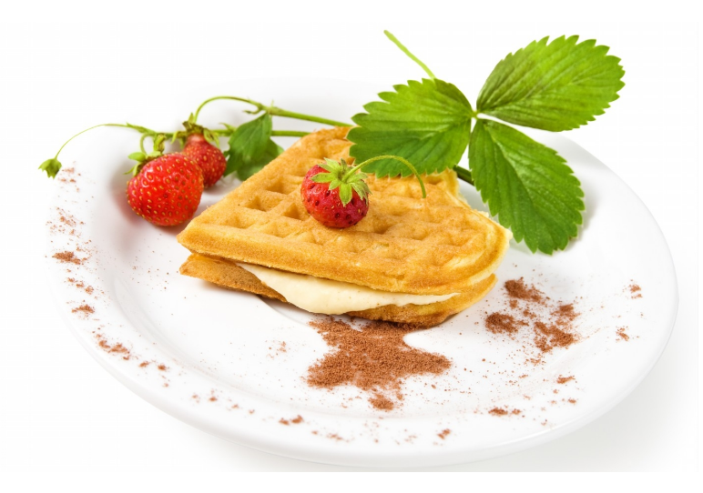
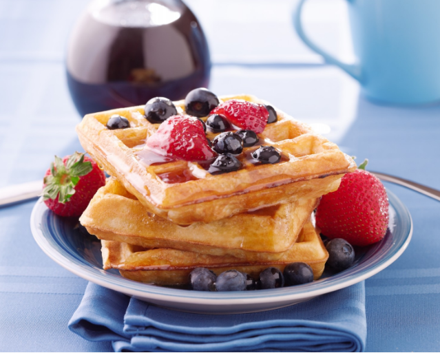
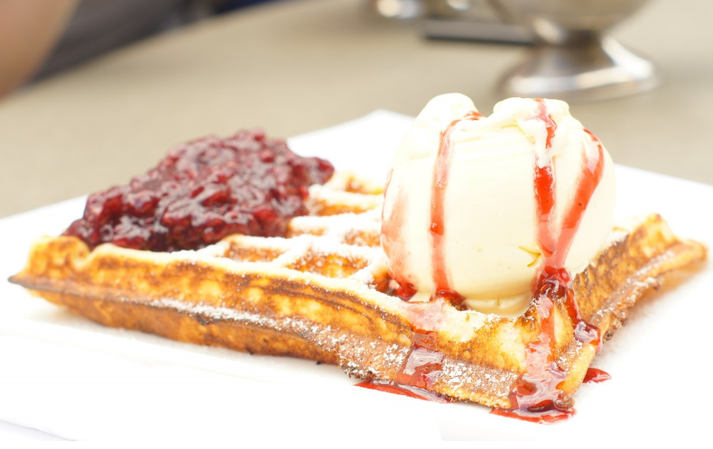
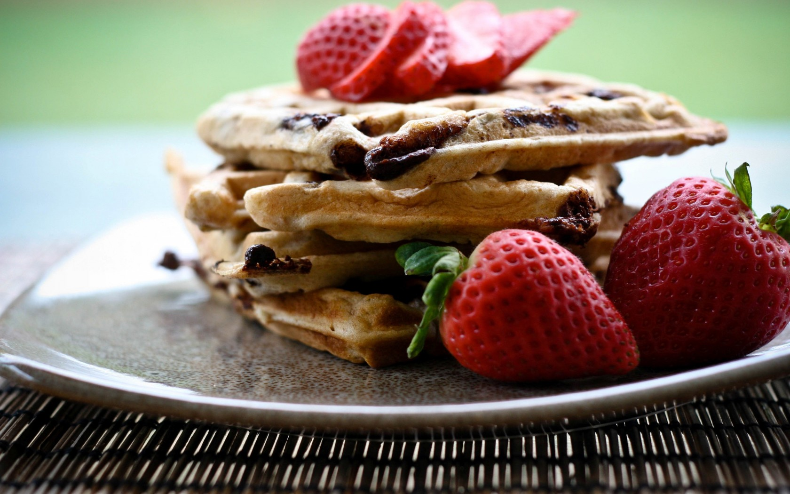
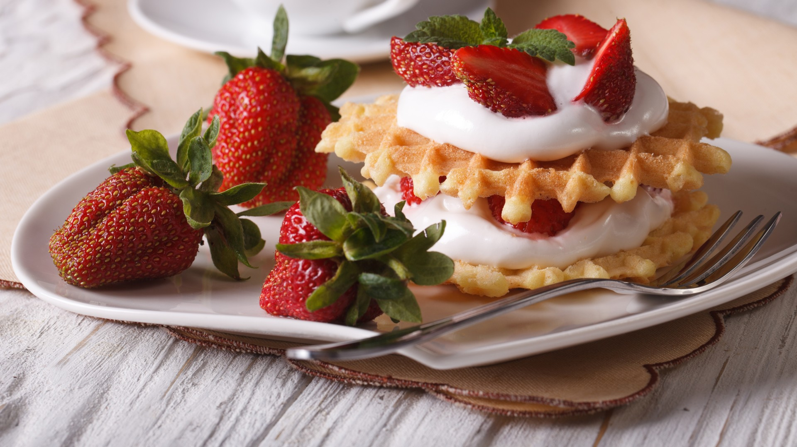
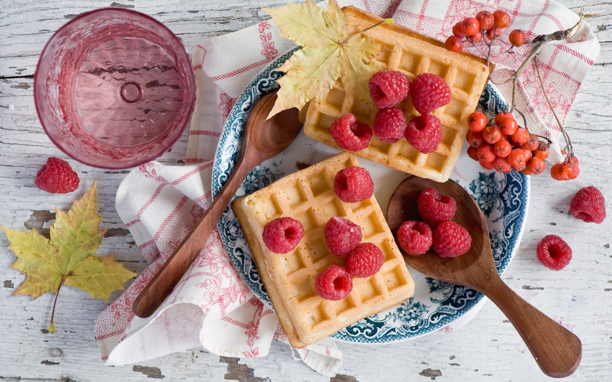
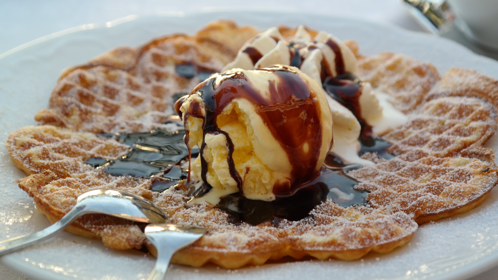

Los waffles, también conocidos en muchos lugares como gofres, es una receta de origen belga muy extendida por todo el mundo. Es muy reconocible por su forma típica forma de rejillas, aunque los hay con diferentes formas. Estos waffles se preparan en unas planchas calientes dónde se compactan y se cocinan, y a los que una vez hechos se les añade encima el resto de ingredientes que completan el mismo, siendo los más habituales helado, nata montada, chocolate o caramelo líquido, entre otros. A continuación vamos a ir mostrando recetas variadas para hacer waffles en casa, recetas con diferentes ingredientes y preparados para que tengais variedad de recetas para elegir la que preparar para la mejor merienda con los amigos o familiares.
Con esta receta vamos a preparar unos ricos waffles con pollo, una buena elección para almorzar de forma especial. Son fáciles de preparar y seguro que encantan a los más pequeños de la casa.
Estos waffles de chocolate son una opción estupenda para preparar para el desayuno o la merienda, siendo unos waffles que combinan perfectamente con muchos otros ingredientes para acompañarlos.
Esta es la receta tradicional para preparar unos ricos waffles belgas, uno de los tipos de waffles más populares y tradicionales que podemos preparar. Aquí tienes la receta detallada paso a paso.
Thermomix para preparar dulces y meriendas, esta receta para hacer waffles te va a encantar, ya que podrás hacerlos de forma rápida y sencilla siguiendo nuestras indicaciones.